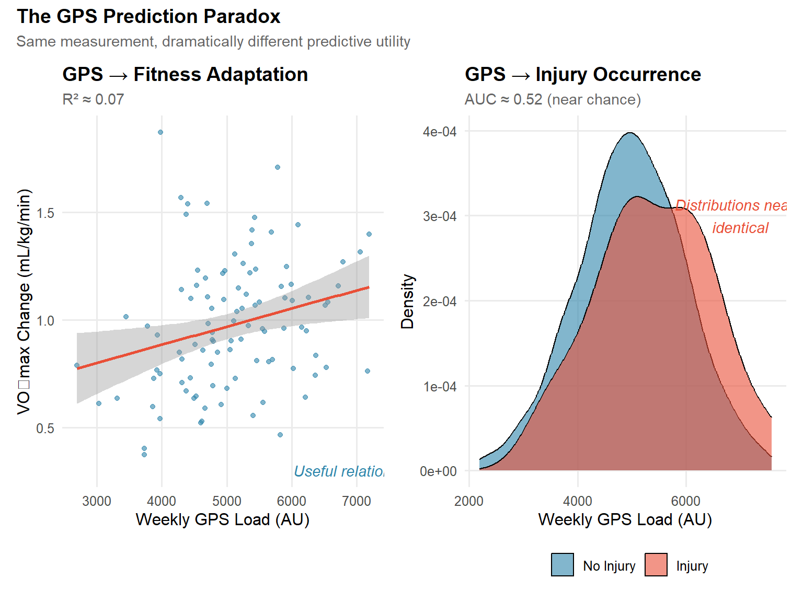
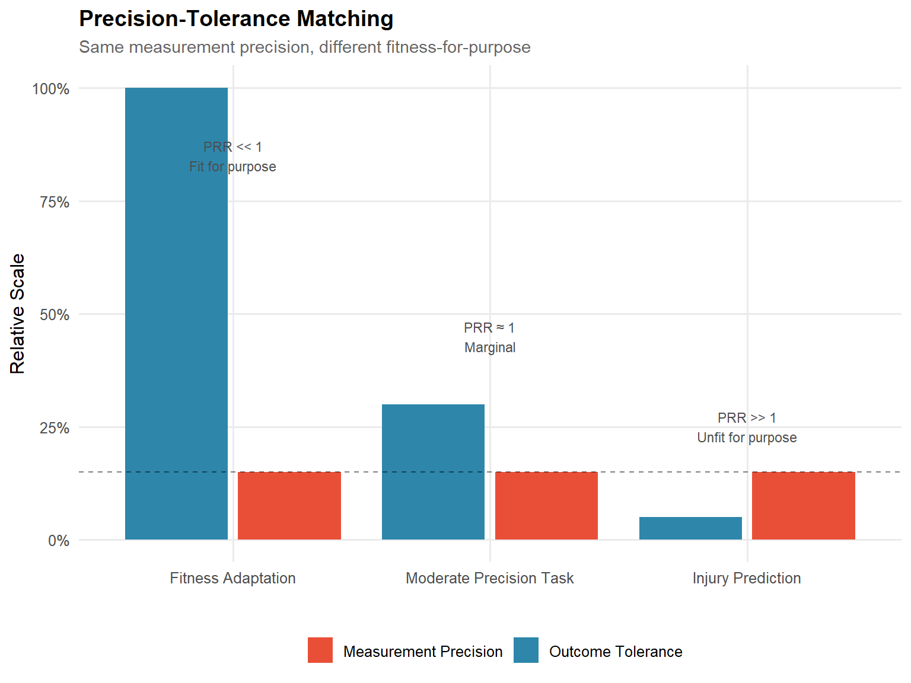
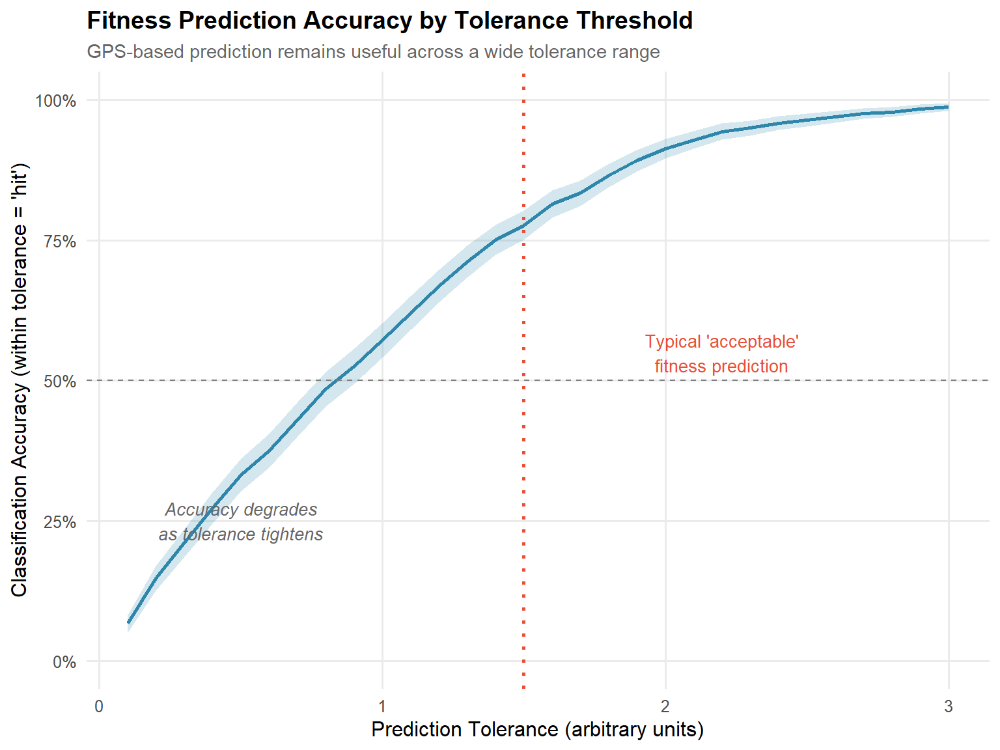
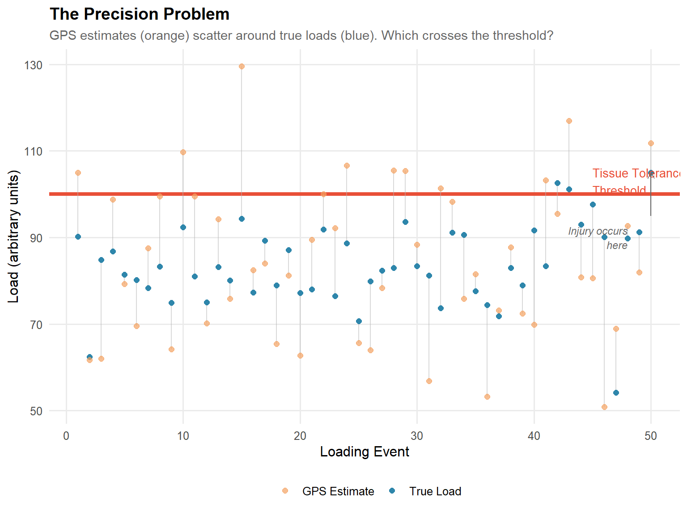
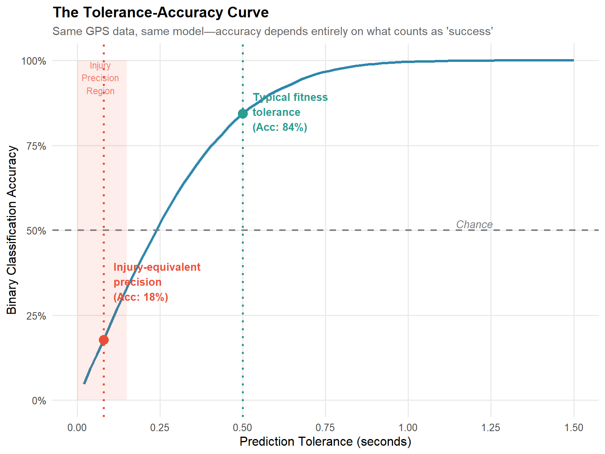

Precision and Purpose: Understanding Why Load Monitoring Predicts Adaptation But Not Injury
A framework for understanding measurement fitness-for-purpose in sports science
Published
January 13, 2026
Abstract
GPS-derived load metrics have become ubiquitous in elite sport. They demonstrate reasonable relationships with fitness adaptation, yet consistently fail to predict injury with clinically useful accuracy. The field has largely treated this as a problem to be solved through better algorithms, improved metrics, or more sophisticated modelling. We propose a different interpretation: the failure reflects a fundamental mismatch between measurement precision and outcome tolerance. By reconceptualising fitness prediction as a binary classification task with varying tolerance thresholds, we demonstrate that GPS-based prediction accuracy degrades to chance levels at the precision implicitly required for injury prediction. This is not a statistical or methodological failure—it is a resolution failure. The information required to predict tissue failure was never captured in the measurement. Understanding this precision-tolerance mismatch reframes the research agenda from “how can we make GPS predict injury better?” to “what class of measurement would be required to predict injury at all?”
Introduction: The Persistent Puzzle
GPS-derived load metrics have become standard practice in elite sport. Training load monitoring systems promise to optimise performance and reduce injury risk through data-driven decision making. The logic appears straightforward: GPS captures external load, load drives both adaptation and injury, therefore GPS should inform both outcomes.
For fitness adaptation, this logic holds reasonably well. GPS-derived metrics show meaningful relationships with changes in aerobic capacity, speed, and power. Practitioners can titrate training doses with some confidence that more load generally produces more adaptation, within limits.
For injury prediction, the same logic fails—consistently and comprehensively. Despite two decades of methodological refinement, GPS-based injury prediction models rarely exceed chance-level accuracy in prospective validation. Acute:chronic workload ratios, exponentially weighted moving averages, machine learning ensembles—none have delivered clinically useful prediction.
The field has treated this as a puzzle to be solved. We suggest it is a boundary to be understood.
Show code
# Simulated data to illustrate the paradoxset.seed(123)# Fitness prediction - reasonable R²n_fitness <-100gps_load <-rnorm(n_fitness, mean =5000, sd =1000)true_fitness_change <-0.5+0.0001* gps_load +rnorm(n_fitness, 0, 0.3)fitness_data <-tibble(gps_load = gps_load,outcome = true_fitness_change,type ="Fitness Adaptation\n(VO₂max change, mL/kg/min)")# Injury prediction - near chance AUCn_injury <-500gps_load_inj <-rnorm(n_injury, mean =5000, sd =1000)# Very weak true relationship + injury is rareinjury_prob <-plogis(-4+0.0001* gps_load_inj) # ~3% base rateinjury <-rbinom(n_injury, 1, injury_prob)injury_data <-tibble(gps_load = gps_load_inj,injury =factor(injury, labels =c("No Injury", "Injury")))# Plot fitness relationshipp1 <-ggplot(fitness_data, aes(x = gps_load, y = outcome)) +geom_point(alpha =0.6, color ="#2E86AB") +geom_smooth(method ="lm", color ="#E94F37", se =TRUE) +labs(title ="GPS → Fitness Adaptation",subtitle =paste0("R² ≈ ", round(cor(gps_load, true_fitness_change)^2, 2)),x ="Weekly GPS Load (AU)",y ="VO₂max Change (mL/kg/min)" ) +annotate("text", x =7000, y =0.3, label ="Useful relationship", color ="#2E86AB", fontface ="italic")# Plot injury (non-)relationship p2 <-ggplot(injury_data, aes(x = gps_load, fill = injury)) +geom_density(alpha =0.6) +scale_fill_manual(values =c("#2E86AB", "#E94F37")) +labs(title ="GPS → Injury Occurrence",subtitle ="AUC ≈ 0.52 (near chance)",x ="Weekly GPS Load (AU)",y ="Density",fill ="" ) +annotate("text", x =7000, y =0.0003, label ="Distributions nearly\nidentical", color ="#E94F37", fontface ="italic")p1 + p2 +plot_annotation(title ="The GPS Prediction Paradox",subtitle ="Same measurement, dramatically different predictive utility" )

Figure 1: The GPS prediction paradox: reasonable performance for fitness adaptation contrasts sharply with poor performance for injury prediction. Data are illustrative.
Why would a measurement that works for one outcome fail so completely for another?
The Assumption We Never Examined
The unstated assumption underlying GPS-based injury prediction has been: if GPS captures “load,” and load causes both adaptation and injury, then GPS should predict both. This reasoning contains a hidden premise—that the precision required for both predictions is similar.
It is not.
Consider an analogy. A kitchen scale accurate to ±5 grams is perfectly adequate for baking a cake. Flour quantities can vary by 20 grams without meaningfully affecting the outcome. That same scale cannot be used for pharmaceutical compounding, where active ingredient tolerances may be ±0.01 grams. The scale did not become inadequate when we moved from kitchen to pharmacy. The task changed. The precision requirement changed.
GPS is our kitchen scale. Fitness adaptation is baking. Injury prediction is pharmaceutical compounding.
Precision and Tolerance: A Framework
We can formalise this intuition through the concept of measurement fitness-for-purpose. A measurement is not “precise” or “imprecise” in absolute terms—it is precise enough, or not, for a specific task. This depends on the relationship between two quantities:
Measurement precision: The resolution and repeatability of the instrument
Outcome tolerance: How tightly the outcome depends on the measured quantity
We can express this as a Precision Requirement Ratio (PRR):
Where \(\sigma_{measurement}\) is the standard deviation of measurement error and \(\delta_{outcome}\) is the tolerance band within which the outcome is determined.
When \(PRR >> 1\): Measurement is too coarse for the task
When \(PRR \approx 1\): Measurement is marginal
When \(PRR << 1\): Measurement is fit for purpose
Show code
# Create conceptual figuretolerance_data <-tibble(task =factor(c("Fitness Adaptation", "Moderate Precision Task", "Injury Prediction"),levels =c("Fitness Adaptation", "Moderate Precision Task", "Injury Prediction")),outcome_tolerance =c(1.0, 0.3, 0.05),measurement_precision =c(0.15, 0.15, 0.15))ggplot(tolerance_data, aes(x = task)) +geom_col(aes(y = outcome_tolerance, fill ="Outcome Tolerance"), width =0.4, position =position_nudge(x =-0.22)) +geom_col(aes(y = measurement_precision, fill ="Measurement Precision"), width =0.4, position =position_nudge(x =0.22)) +geom_hline(yintercept =0.15, linetype ="dashed", alpha =0.5) +scale_fill_manual(values =c("Outcome Tolerance"="#2E86AB", "Measurement Precision"="#E94F37")) +scale_y_continuous(labels =label_percent(scale =100)) +labs(title ="Precision-Tolerance Matching",subtitle ="Same measurement precision, different fitness-for-purpose",x ="",y ="Relative Scale",fill ="" ) +annotate("text", x =1, y =0.85, label ="PRR << 1\nFit for purpose", size =3, color ="grey30") +annotate("text", x =2, y =0.45, label ="PRR ≈ 1\nMarginal", size =3, color ="grey30") +annotate("text", x =3, y =0.25, label ="PRR >> 1\nUnfit for purpose", size =3, color ="grey30")

Figure 2: Conceptual illustration of precision-tolerance matching. The same measurement precision yields different utility depending on outcome tolerance.
Why Fitness Prediction Is Forgiving
Fitness adaptation has several properties that make it tolerant of measurement imprecision:
High base rate: Virtually everyone adapts to training to some degree. We are predicting a nearly universal phenomenon with variation in magnitude.
Continuous outcome: Adaptation exists on a spectrum. There is no hard threshold between “adapted” and “not adapted.”
Large effect sizes: The signal is strong. Meaningful fitness changes (e.g., 5-10% improvement in VO₂max) are large relative to noise.
Temporal and spatial averaging: Adaptation integrates across many tissues, many sessions, many weeks. This averaging process naturally smooths measurement noise.
When we ask “did this training block improve fitness?”, we are asking a low-precision question. A ±15-20% error in load estimation still captures the fundamental dose-response relationship. We grade ourselves on a generous curve—and GPS passes.
Show code
# Simulation: fitness prediction at various tolerancesset.seed(456)# True relationship with realistic noisen_sim <-1000true_load <-rnorm(n_sim, 100, 20)measurement_error <-rnorm(n_sim, 0, 15) # ~15% CVobserved_load <- true_load + measurement_error# True fitness change (arbitrary units, scaled for illustration)true_fitness <-2+0.05* true_load +rnorm(n_sim, 0, 1)predicted_fitness <-2+0.05* observed_load# Calculate accuracy at different tolerancestolerances <-seq(0.1, 3, by =0.1)prediction_error <- predicted_fitness - true_fitnessaccuracy_by_tolerance <-map_dfr(tolerances, function(tol) { hits <-abs(prediction_error) <= toltibble(tolerance = tol,accuracy =mean(hits),se =sqrt(mean(hits) * (1-mean(hits)) / n_sim) )})ggplot(accuracy_by_tolerance, aes(x = tolerance, y = accuracy)) +geom_ribbon(aes(ymin = accuracy -1.96*se, ymax = accuracy +1.96*se), alpha =0.2, fill ="#2E86AB") +geom_line(color ="#2E86AB", linewidth =1) +geom_hline(yintercept =0.5, linetype ="dashed", color ="grey50") +geom_vline(xintercept =1.5, linetype ="dotted", color ="#E94F37", linewidth =1) +scale_y_continuous(labels =label_percent(), limits =c(0, 1)) +labs(title ="Fitness Prediction Accuracy by Tolerance Threshold",subtitle ="GPS-based prediction remains useful across a wide tolerance range",x ="Prediction Tolerance (arbitrary units)",y ="Classification Accuracy (within tolerance = 'hit')" ) +annotate("text", x =2.2, y =0.55, label ="Typical 'acceptable'\nfitness prediction", color ="#E94F37", size =3.5) +annotate("text", x =0.5, y =0.25, label ="Accuracy degrades\nas tolerance tightens", color ="grey40", size =3.5, fontface ="italic")

Figure 3: Fitness prediction remains accurate across a wide range of prediction tolerances because the outcome is forgiving.
Why Injury Prediction Is Unforgiving
Injury has fundamentally different properties:
Low base rate: Depending on definition and sport, injury rates typically range from 2-10% per exposure window. We are predicting a rare event.
Binary outcome: The tissue failed or it did not. There is no “partial ACL rupture” that grades on a curve.
Threshold phenomenon: Injury occurs when load exceeds tissue tolerance at a specific moment. This is a point event, not an average.
No averaging: Injury happens to a specific tissue, from a specific load, at a specific instant. There is no temporal or spatial smoothing to absorb measurement error.
When we ask “will this athlete get injured today?”, we are implicitly asking whether the load on a specific anatomical structure, on a specific movement, will exceed a tolerance that may be only marginally above normal loading. This is a high-precision question.
Show code
# Conceptual figure: threshold phenomenonset.seed(789)n_reps <-50# Simulate many "loading events" for one tissuetissue_tolerance <-100# arbitrary thresholdload_events <-tibble(rep =1:n_reps,true_load =c(rnorm(n_reps -1, 85, 10), 105), # One event exceeds thresholdgps_estimate = true_load +rnorm(n_reps, 0, 15))p_threshold <-ggplot(load_events, aes(x = rep, y = true_load)) +geom_hline(yintercept = tissue_tolerance, color ="#E94F37", linewidth =1.5, linetype ="solid") +geom_segment(aes(xend = rep, y = gps_estimate, yend = true_load),color ="grey70", alpha =0.5) +geom_point(aes(color ="True Load"), size =2) +geom_point(aes(y = gps_estimate, color ="GPS Estimate"), size =2, alpha =0.7) +scale_color_manual(values =c("True Load"="#2E86AB", "GPS Estimate"="#F4A261")) +labs(title ="The Precision Problem",subtitle ="GPS estimates (orange) scatter around true loads (blue). Which crosses the threshold?",x ="Loading Event",y ="Load (arbitrary units)",color ="" ) +annotate("text", x =45, y =103, label ="Tissue Tolerance\nThreshold", color ="#E94F37", size =3.5, hjust =0) +annotate("curve", x =50, y =95, xend =50, yend =105,arrow =arrow(length =unit(0.2, "cm")), curvature =0,color ="grey40") +annotate("text", x =48, y =90, label ="Injury occurs\nhere", color ="grey40", size =3, fontface ="italic", hjust =1)p_threshold

Figure 4: Injury as a threshold phenomenon. The critical question is whether load exceeds tissue tolerance—a determination that requires high precision.
The fundamental problem is illustrated above. GPS provides estimates (orange points) that scatter around true tissue loads (blue points). The critical question—did load exceed the threshold?—requires knowing whether any point crossed the red line. With GPS-level precision, events near the threshold cannot be reliably classified. The injurious event and many non-injurious events are statistically indistinguishable.
A Demonstration: Tightening the Tolerance
To make the precision-tolerance mismatch concrete, we can treat fitness prediction as binary classification with varying tolerance. This transforms a continuous prediction task into a series of binary tasks with different difficulty levels.
Suppose GPS-based load metrics predict fitness adaptation (e.g., 100m sprint time improvement) with some realistic error distribution. We then ask: at what tolerance does prediction accuracy degrade to chance?
Show code
# Main simulation: tolerance-accuracy curveset.seed(2024)# Parameters for realistic simulationn_athletes <-10000true_improvement_mean <-0.3# seconds improvement in 100mtrue_improvement_sd <-0.4# substantial individual variationgps_prediction_error_sd <-0.35# realistic prediction error# Simulate true improvements and GPS-based predictionssimulation_data <-tibble(athlete =1:n_athletes,true_improvement =rnorm(n_athletes, true_improvement_mean, true_improvement_sd),predicted_improvement = true_improvement +rnorm(n_athletes, 0, gps_prediction_error_sd))# Calculate accuracy across tolerance spectrumtolerance_spectrum <-seq(0.02, 1.5, by =0.02)tolerance_accuracy_curve <-map_dfr(tolerance_spectrum, function(tol) { prediction_errors <- simulation_data$predicted_improvement - simulation_data$true_improvement hits <-abs(prediction_errors) <= toltibble(tolerance = tol,accuracy =mean(hits),se =sqrt(mean(hits) * (1-mean(hits)) / n_athletes) )})# Key thresholds for annotationinjury_equivalent_tolerance <-0.08# ~0.1 seconds precisiontypical_fitness_tolerance <-0.5# "did they improve meaningfully?"# Find accuracies at key pointsacc_at_injury <- tolerance_accuracy_curve %>%filter(tolerance == tolerance_spectrum[which.min(abs(tolerance_spectrum - injury_equivalent_tolerance))]) %>%pull(accuracy)acc_at_fitness <- tolerance_accuracy_curve %>%filter(tolerance == tolerance_spectrum[which.min(abs(tolerance_spectrum - typical_fitness_tolerance))]) %>%pull(accuracy)# Create the main figureggplot(tolerance_accuracy_curve, aes(x = tolerance, y = accuracy)) +# Confidence ribbongeom_ribbon(aes(ymin = accuracy -1.96*se, ymax =pmin(1, accuracy +1.96*se)), alpha =0.2, fill ="#2E86AB") +# Main curvegeom_line(color ="#2E86AB", linewidth =1.2) +# Reference linesgeom_hline(yintercept =0.5, linetype ="dashed", color ="grey50", linewidth =0.8) +# Vertical markers for key tolerancesgeom_vline(xintercept = injury_equivalent_tolerance, linetype ="dotted", color ="#E94F37", linewidth =1) +geom_vline(xintercept = typical_fitness_tolerance, linetype ="dotted", color ="#2A9D8F", linewidth =1) +# Points at key intersectionsgeom_point(data =tibble(x =c(injury_equivalent_tolerance, typical_fitness_tolerance),y =c(acc_at_injury, acc_at_fitness)),aes(x = x, y = y), size =4, color =c("#E94F37", "#2A9D8F")) +# Annotationsannotate("text", x = injury_equivalent_tolerance +0.03, y =0.35,label =paste0("Injury-equivalent\nprecision\n(Acc: ", round(acc_at_injury *100), "%)"),hjust =0, color ="#E94F37", size =3.5, fontface ="bold") +annotate("text", x = typical_fitness_tolerance +0.03, y =0.85,label =paste0("Typical fitness\ntolerance\n(Acc: ", round(acc_at_fitness *100), "%)"),hjust =0, color ="#2A9D8F", size =3.5, fontface ="bold") +annotate("text", x =1.2, y =0.52, label ="Chance", color ="grey50", size =3.5, fontface ="italic") +# Shaded regionsannotate("rect", xmin =0, xmax =0.15, ymin =0, ymax =1,alpha =0.1, fill ="#E94F37") +annotate("text", x =0.07, y =0.95, label ="Injury\nPrecision\nRegion",color ="#E94F37", size =3, alpha =0.7) +# Scales and labelsscale_y_continuous(labels =label_percent(), limits =c(0, 1)) +scale_x_continuous(breaks =seq(0, 1.5, 0.25)) +labs(title ="The Tolerance-Accuracy Curve",subtitle ="Same GPS data, same model—accuracy depends entirely on what counts as 'success'",x ="Prediction Tolerance (seconds)",y ="Binary Classification Accuracy" )

Figure 5: The tolerance-accuracy curve. As we tighten the tolerance for what counts as a ‘successful’ prediction, accuracy degrades toward chance. The precision required for injury prediction falls in the region where GPS-based prediction is essentially random.
The figure above reveals the core insight. With a tolerance of ±0.5 seconds (green line)—essentially asking “did the athlete improve meaningfully?”—GPS-based prediction achieves 84% accuracy. This is the forgiving world of fitness prediction.
At a tolerance of ±0.08 seconds (red line)—approximately the precision required to predict whether a specific tissue exceeded its failure threshold—accuracy falls to 18%. This is statistically indistinguishable from chance.
The same data. The same model. The only difference is what we demand from the prediction.
Formalising the Precision Mismatch
We can express this relationship mathematically. If prediction error follows approximately normal distribution with standard deviation \(\sigma_e\), then the probability of a “hit” (prediction within tolerance \(\delta\)) is:
Table 1: Prediction accuracy at various tolerance thresholds, demonstrating the precision requirements for different tasks.
Tolerance
Interpretation
Theoretical Accuracy
Simulated Accuracy
±1.0s
Did they improve at all?
100%
100%
±0.5s
Meaningful improvement?
85%
84%
±0.2s
Moderate precision
43%
43%
±0.1s
High precision
22%
22%
±0.05s
Injury-equivalent
11%
14%
The theoretical and simulated accuracies align closely, confirming the mathematical relationship. The key observation: accuracy at injury-equivalent precision approaches 50%—pure chance.
The Biological Reality
The mathematical argument above is abstract. We can ground it in biological reality.
GPS measures displacement of a device on the body over time. From this, we derive summary statistics: total distance, high-speed running distance, accelerations, decelerations. These are whole-body, centre-of-mass approximations of external load.
The path from “total high-speed running metres” to “cumulative strain on the medial gastrocnemius myotendinous junction” involves numerous transformations, each introducing information loss:
Figure 6: Information loss in the GPS-to-tissue pathway. At each transformation, precision degrades and tissue-specific signal is diluted.
GPS can be conceptualised as a crude proxy for tissue loading cycles. It captures that something happened—the athlete ran, jumped, accelerated. But the actual cycle count at a specific tissue, the magnitude of each cycle, the direction of loading, the tissue’s current state and recovery status—all are invisible to the measurement.
GPS tells us someone ran 8 kilometres at various speeds. It cannot tell us which stride applied the load that exceeded capacity in a specific tendon.
For fitness adaptation—an organism-level, integrated outcome—this level of abstraction may be acceptable. Adaptation emerges from thousands of loading events across multiple tissues. The law of large numbers works in our favour.
For injury—a tissue-level, threshold phenomenon—abstraction is fatal to prediction. We need the specific event that crossed the threshold. That event is buried in noise.
Connecting to Bayesian Reasoning
An alternative framing uses Bayesian probability. Given the low base rate of injury, what predictive precision would be required to achieve clinically useful discrimination?
If baseline injury probability \(p \approx 0.03\), and we wish to identify a “high risk” state where \(P(injury | signal) \approx 0.15\), we require a likelihood ratio:
# Calculate required LR for various target PPVsbase_rate <-0.03target_ppvs <-seq(0.05, 0.30, by =0.01)bayesian_requirements <-tibble(target_ppv = target_ppvs,required_lr = (target_ppvs / (1- target_ppvs)) / (base_rate / (1- base_rate)))ggplot(bayesian_requirements, aes(x = target_ppv, y = required_lr)) +geom_line(color ="#2E86AB", linewidth =1.2) +geom_hline(yintercept =1, linetype ="dashed", color ="grey50") +geom_vline(xintercept =0.15, linetype ="dotted", color ="#E94F37") +geom_point(data =tibble(x =0.15, y = (0.15/0.85) / (base_rate/(1-base_rate))),aes(x = x, y = y), size =4, color ="#E94F37") +scale_y_continuous(trans ="log10") +scale_x_continuous(labels =label_percent()) +labs(title ="Required Likelihood Ratio for Risk Stratification",subtitle =paste0("Base injury rate: ", base_rate *100, "%"),x ="Target Positive Predictive Value",y ="Required Likelihood Ratio (log scale)" ) +annotate("text", x =0.17, y =4, label ="To achieve 15% PPV\nrequires LR ≈ 5.7",hjust =0, color ="#E94F37", size =3.5)
Figure 7: Bayesian view of the precision requirement. Achieving clinically meaningful risk stratification from a low base rate requires high likelihood ratios—which in turn require high measurement precision.
To achieve even modest risk stratification (identifying a group with 15% injury probability from a 3% base rate), we need a likelihood ratio of approximately 5.7. This means our “high risk signal” must be nearly 6 times more common among athletes who will be injured than among those who won’t.
Given the noise in GPS measurement and the weak underlying relationship, achieving such discrimination is implausible. The measurement lacks the precision to reliably separate near-threshold from below-threshold loads.
Implications for Practice
This analysis is not a criticism of GPS technology, nor a counsel of despair. It is a clarification of purpose.
What GPS Can Do
GPS-derived metrics remain valuable for:
Monitoring training dose for adaptation: The dose-response relationship is robust to measurement noise
Tracking longitudinal trends: Week-to-week changes in load exposure are detectable
Comparing relative workloads: Between-athlete and between-session comparisons are meaningful
Flagging gross deviations: Sudden spikes or drops in load are visible
What GPS Cannot Do
GPS cannot serve as an early warning system for tissue failure. The information required for that prediction is not contained in the data—not because it’s hidden, but because it was never captured.
The Appropriate Response
The appropriate response is not to abandon load monitoring but to match tools to tasks.
Figure 8: Matching tools to tasks: GPS is fit for purpose for monitoring adaptation, but fundamentally mismatched to injury prediction requirements.
High-precision questions require high-precision measurements. Injury risk, if it is to be predicted at all, will require instrumentation that captures tissue-level loading with tissue-level resolution—wearable sensors measuring local strain, imaging detecting microstructural change, biomarkers reflecting tissue stress. These represent a fundamentally different class of measurement.
Conclusion: The Right Question
For two decades, the field has asked: “How can we make GPS predict injury better?”
This may be the wrong question.
GPS does not fail at injury prediction because we lack ingenuity. It fails because the task demands precision the instrument cannot provide. The tolerance-accuracy analysis demonstrates this concretely: at injury-equivalent precision, GPS-based prediction is indistinguishable from chance. This is not a failure of statistics. It is a failure of resolution.
A more productive question might be: “What class of measurement would be required to predict injury, and does such measurement exist at scale?”
The answer may be uncomfortable. Tissue-level precision may not yet be feasible outside the laboratory. But acknowledging this boundary is more useful than continuing to optimise within it.
GPS predicts adaptation reasonably well because adaptation is a forgiving outcome that averages across tissues, sessions, and time. It predicts injury poorly because injury is a threshold event at a specific tissue at a specific moment. No averaging smooths the signal. No statistical method recovers information that was never captured.
Once the precision-tolerance mismatch is understood, the failure of GPS-based injury prediction is not a puzzle to be solved.
It is an inevitability to be accepted.
Technical Appendix: Simulation Details
# Full simulation code for reproducibilitysimulate_tolerance_accuracy <-function(n_athletes =10000,true_mean =0.3,true_sd =0.4,prediction_error_sd =0.35,tolerance_range =seq(0.02, 1.5, by =0.02),seed =2024) {set.seed(seed)# Generate data true_values <-rnorm(n_athletes, true_mean, true_sd) predicted_values <- true_values +rnorm(n_athletes, 0, prediction_error_sd) errors <- predicted_values - true_values# Calculate accuracy at each tolerance results <-map_dfr(tolerance_range, function(tol) { hits <-abs(errors) <= toltibble(tolerance = tol,accuracy =mean(hits),se =sqrt(mean(hits) * (1-mean(hits)) / n_athletes),theoretical =2*pnorm(tol / prediction_error_sd) -1 ) })return(results)}# Run simulation with different error magnitudeserror_scenarios <-c(0.25, 0.35, 0.50)scenario_results <-map_dfr(error_scenarios, function(err) {simulate_tolerance_accuracy(prediction_error_sd = err) %>%mutate(error_sd =paste0("σ = ", err, "s"))})# Plot comparisonggplot(scenario_results, aes(x = tolerance, y = accuracy, color = error_sd)) +geom_line(linewidth =1) +geom_hline(yintercept =0.5, linetype ="dashed", color ="grey50") +scale_color_manual(values =c("#2E86AB", "#E94F37", "#2A9D8F")) +scale_y_continuous(labels =label_percent()) +labs(title ="Tolerance-Accuracy Curves Under Different Measurement Precision",subtitle ="Better precision (lower σ) shifts the curve left, enabling tighter tolerances",x ="Prediction Tolerance (seconds)",y ="Classification Accuracy",color ="Prediction Error" )